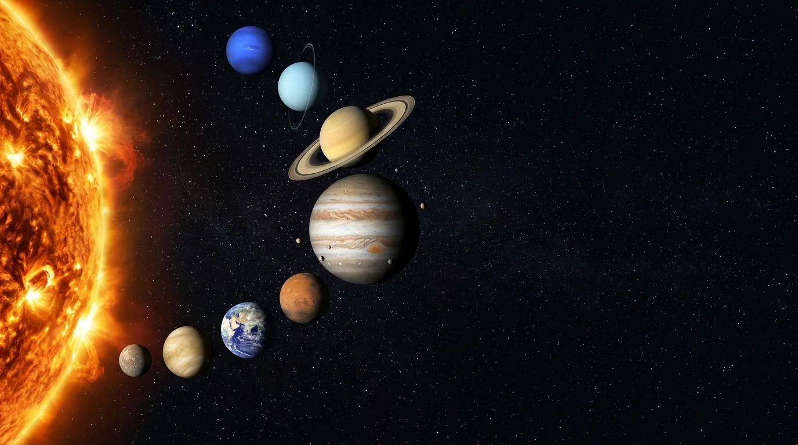
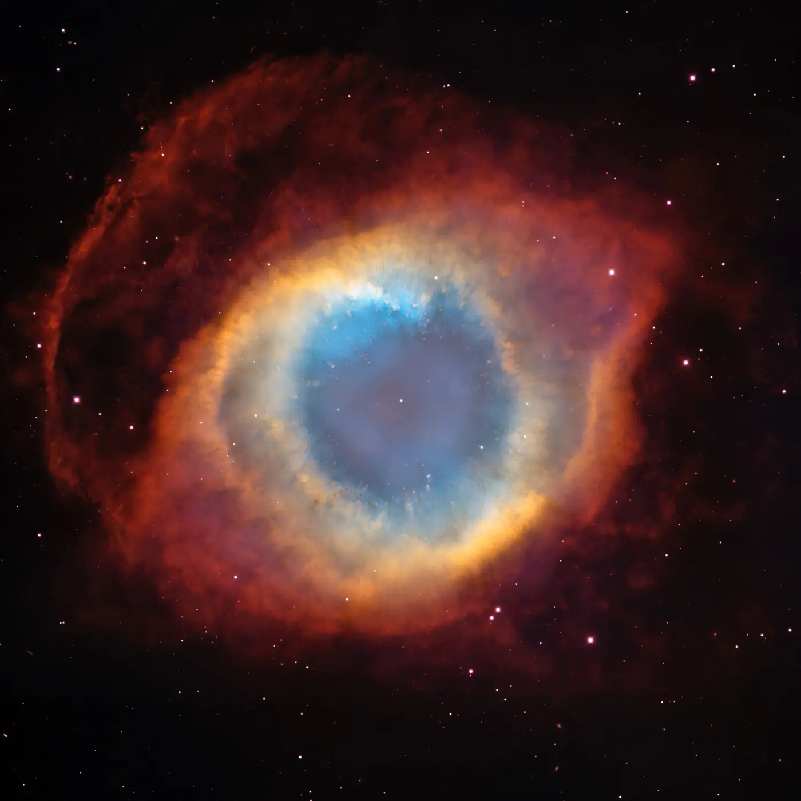
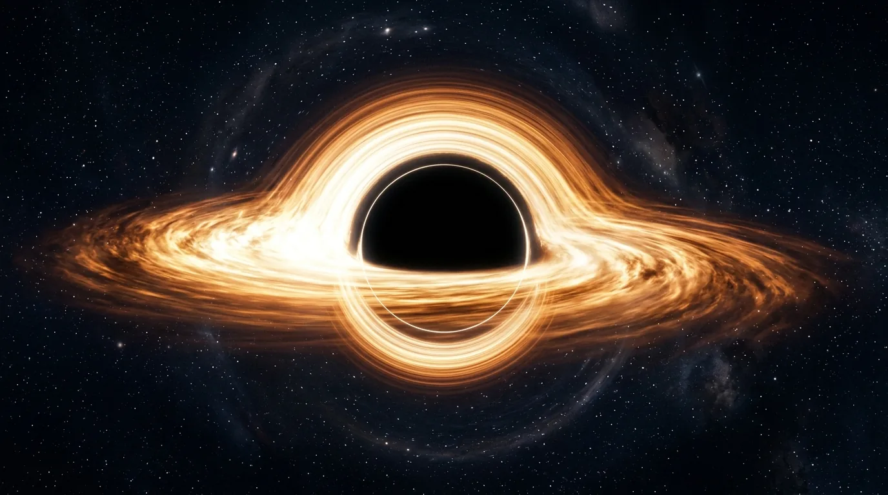

What you need to know (Edexcel IGCSE specification 8.2–8.10)
- 8.2know that: the universe is a large collection of billions of galaxies; a galaxy is a large collection of billions of stars; our solar system is in the Milky Way galaxy
- 8.3understand why gravitational field strength, g, varies and know that it is different on other planets and the Moon from that on the Earth
- 8.4explain that gravitational force: causes moons to orbit planets; causes the planets to orbit the Sun; causes artificial satellites to orbit the Earth; causes comets to orbit the Sun
- 8.5describe the differences in the orbits of comets, moons and planets
- 8.6use the relationship between orbital speed, orbital radius and time period: orbital speed = (2 × π × orbital radius) ÷ time period, v = 2πr ÷ T
- 8.7understand how stars can be classified according to their colour
- 8.8know that a star’s colour is related to its temperature
- 8.9describe the evolution of stars of similar mass to the Sun through the following stages: nebula; star (main sequence); red giant; white dwarf
- 8.10describe the evolution of stars with a mass larger than the Sun
The universe & our Solar System 8.28.4
From smallest to largest, objects in space fit inside one another:
Our Solar System (the Sun, 8 planets, moons, asteroids and comets) is in the Milky Way galaxy — one of billions of galaxies in the universe.
The 8 planets in order from the Sun

- Moons are natural satellites that orbit planets.
- Comets are balls of ice and dust from the outer Solar System with highly elliptical orbits around the Sun.
- Asteroids are rocky bodies orbiting the Sun (mostly in the asteroid belt between Mars and Jupiter).
Quick check
0 / 2 doneOrbits & gravitational field strength 8.38.48.5
Gravitational attraction is the inward force that causes moons to orbit planets, planets and comets to orbit the Sun, and artificial satellites to orbit the Earth.
- Planets & moons: slightly elliptical (almost circular) orbits at nearly constant speed.
- Comets: highly elliptical orbits — they travel fastest closest to the Sun (strongest gravitational pull) and slowest far away.
- Artificial satellites: low orbits for Earth monitoring/weather; high 24-hour geostationary orbits for TV and communications.


Gravitational field strength (g)
Weight is the force of gravity on a mass: Weight (N) = mass (kg) × gravitational field strength (N/kg), or W = m × g.
- g depends on the mass and radius of the planet or moon: a larger mass gives a larger g.
- g decreases as you move further away from the centre of a planet.
- Your mass (kg) stays the same everywhere — only your weight (N) changes!
| Body | Sun | Jupiter | Earth | Mars | Moon |
|---|---|---|---|---|---|
| g (N/kg) | 274 | 26 | 10 (9.8) | 3.7 | 1.6 |
- Formula: W = m × g.
- A 60 kg astronaut on Earth (g = 10 N/kg): W = 60 × 10 = 600 N.
- On the Moon (g = 1.6 N/kg): mass stays 60 kg; W = 60 × 1.6 = 96 N.
Now you try: a rover has mass 200 kg. Calculate its weight on Mars (g = 3.7 N/kg).
- Never say your mass is smaller on the Moon — your mass is constant; your weight is smaller because g is smaller.
- Never say comets have circular orbits — comet orbits are highly elliptical, moving fastest near the Sun.
Quick check
0 / 2 doneOrbital speed 8.6 Double Award only
For a circular orbit of radius r, the distance travelled in one complete orbit is the circumference 2πr, and the time taken is the time period T:
- v = orbital speed (m/s)
- r = orbital radius from the centre of the planet/star (m)
- T = orbital time period (s)
A geostationary satellite orbits 35 000 km above the Earth's surface (period 24 h). Earth's radius is 6400 km. Calculate its orbital speed in m/s.
- Add Earth's radius to height: r = 6400 + 35 000 = 41 400 km = 41 400 000 m.
- Convert period to seconds: T = 24 × 60 × 60 = 86 400 s.
- Calculate: v = (2 × π × 41 400 000) ÷ 86 400 = 3010 m/s.
Now you try: the Moon orbits Earth at r = 384 000 km with T = 27.3 days. Calculate its speed in m/s.
Quick check
0 / 2 doneStar birth & star colours 8.78.88.9
How a star is born
- A nebula is a huge cloud of dust and hydrogen gas.
- Gravitational attraction pulls the gas and dust inward into a hot, dense protostar (GPE → thermal energy).
- When the core is hot and dense enough, nuclear fusion of hydrogen into helium starts — forming a main sequence star.

Classifying stars by colour & temperature
A star's colour tells us its surface temperature — just like heated steel glowing red, then orange, then yellow and white-hot as its temperature rises.
Don't think of bathroom taps! In Physics, blue-white stars have the highest surface temperature and red stars have the lowest surface temperature (just like a Bunsen flame: a roaring blue flame is hotter than a yellow/red flame).
Beyond IGCSE The 7 spectral classes (O B A F G K M)
Astronomers split stars into 7 spectral letters from hottest to coolest: O (blue), B (blue-white), A (white), F (yellow-white), G (yellow — our Sun!), K (orange), M (red). Mnemonic: Oh Be A Fine Guy/Girl, Kiss Me!
Quick check
0 / 2 doneLife cycles of stars 8.98.10
Stars of similar mass to the Sun 8.9
- Nebula → Protostar: cloud of gas and dust collapses under gravity and heats up.
- Main sequence star: stable for billions of years because inward gravity balances outward thermal/radiation pressure from hydrogen fusion.
- Red giant: hydrogen in the core runs out; the outer layers expand and cool (becoming red).
- White dwarf: outer layers are thrown off (planetary nebula), leaving a small, dense, very hot white core that slowly cools.
Stars with much greater mass than the Sun 8.10
- Massive main sequence stars fuse hydrogen much faster and expand into a red supergiant.
- When fusion stops, the core collapses violently and explodes as a supernova.
- The remaining core becomes an ultra-dense neutron star, or (for the very largest stars) a black hole whose gravity is so strong not even light can escape.

- Sun-like star: Nebula → Protostar → Main sequence → Red giant → White dwarf.
- Massive star (DA): Nebula → Protostar → Main sequence → Red supergiant → Supernova → Neutron star or black hole.
Now you try: why does a main sequence star stay a stable size for billions of years?
Quick check
0 / 2 doneSummary & end-of-topic test
- Scale: Planet → Solar System → Galaxy (the Milky Way, billions of stars) → Universe (billions of galaxies).
- Orbits & gravity: gravity keeps moons, planets, satellites (nearly circular) and comets (very elliptical, fastest near the Sun) in orbit; W = m × g (mass stays constant, weight changes with g).
- Orbital speed (DA): v = 2πr ÷ T (convert r to metres from the planet's centre and T to seconds for m/s).
- Stars: hottest = blue-white, coolest = red. Sun-like: nebula → protostar → main sequence → red giant → white dwarf. Massive (DA): → red supergiant → supernova → neutron star or black hole.
End-of-topic test
Test yourself one question at a time without looking back — answer each question to unlock the next, or tap Show all.
Exam-style questions
Write your answer to each part before opening the mark scheme, then tick every mark point you earned.